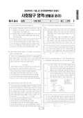

문제지


시험지를 먼저 풀어 보세요. 등급컷·표준점수·난이도는 흐리게 가려 뒀어요.
시험지를 먼저 풀어 보세요. 점수와 인원 수치는 흐리게 가려 뒀어요.
| 등급 | 표준점수 이상 | 인원(명) | 비율 |
|---|---|---|---|
| 1 | 64 | 3,734 | 5.23% |
| 2 | 61 | 6,080 | 8.51% |
| 3 | 59 | 6,939 | 9.71% |
| 4 | 56 | 12,074 | 16.9% |
| 5 | 50 | 15,539 | 21.75% |
| 6 | 39 | 11,882 | 16.63% |
| 7 | 35 | 7,952 | 11.13% |
| 8 | 32 | 5,680 | 7.95% |
| 9 | 27 | 1,553 | 2.17% |
시·도교육청 공개 자료
출처: 시·도교육청이 공개한 전국연합학력평가 성적 분석·통계자료(공개 자료 보기).
발행 기관: 시·도교육청(전국연합학력평가). 파일 위치: 이 사이트가 보관한 사본. 저작권은 발행 기관에 있습니다. 원본과 다르거나 게시 중단이 필요하면 연락처로 알려 주세요. 등급컷 출처 구분은 데이터 원칙에서 설명합니다.
지난 회차의 등급컷·표준점수·난이도는 흐리게 가려 뒀어요.
막대 색은 역대 대비 난이도 · 진한 막대가 이 시험 · 막대를 누르면 그 회차로 이동
| 회차 | 1등급컷 | 표점 최고 | 1등급 표점 | 난이도 |
|---|---|---|---|---|
| 11월 학평2023년 고2이 시험 | — | — | — | — |
| 9월 학평2023년 고2 | 42 | 76 | 69 | 매우 어려움 |
| 6월 학평2023년 고2 | 47 | 66 | 64 | 쉬움 |
| 3월 학평2023년 고2 | 48 | 64 | 63 | 매우 쉬움 |
| 11월 학평2022년 고2 | 47 | 70 | 67 | 보통 |
| 9월 학평2022년 고2 | 45 | 71 | 67 | 보통 |
| 6월 학평2022년 고2 | 43 | 73 | 66 | 어려움 |
| 3월 학평2022년 고2 | 50 | 64 | 64 | 매우 쉬움 |
| 11월 학평2021년 고2 | 44 | 74 | 69 | 매우 어려움 |
| 6월 학평2021년 고2 | 44 | 72 | 67 | 어려움 |